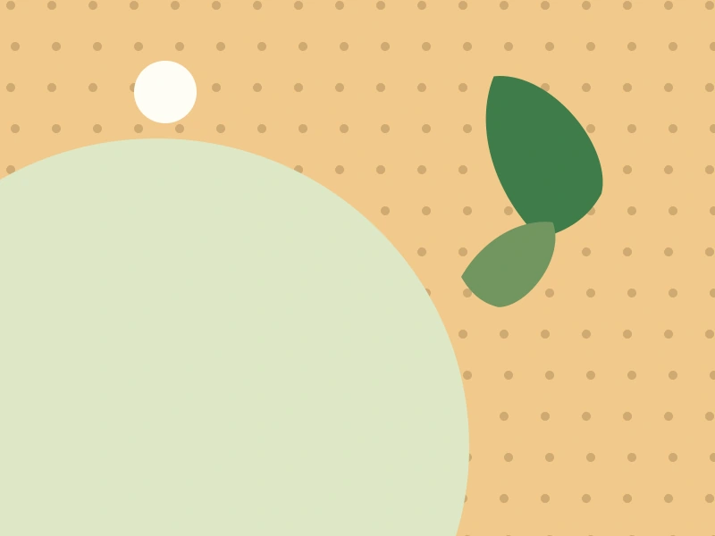

برای انتخاب نهال، مقدار نور و فضای باغچهات را یادداشت کن.
پیش از بازدید · نور باغچه
دربارهٔ ما
ریشهدار از ۱۳۴۱
سه نسل با یک علاقهٔ مشترک؛ پرورش گیاهانی که با خاک و هوای باغ خانه سازگارند.
۱۳۴۱سال شروع۸۰۰+گونهٔ گیاهیگیلانمکان
همراه شما هستیم انتخاب این قالب
انتخاب این قالب